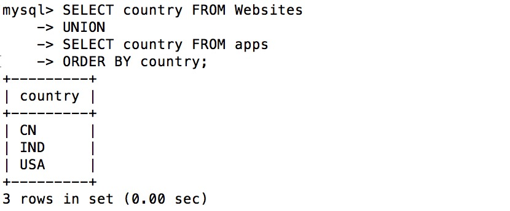
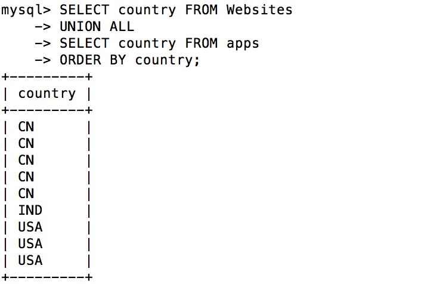

MySQL UNION 演算子
本チュートリアルでは、MySQLUNION演算子の構文と例を紹介します。
説明
MySQL UNION 演算子は、2つ以上の SELECT 文の結果を1つの結果セットに結合し、重複する行を除去するために使用されます。
UNION 演算子は、2つ以上の SELECT 文で構成される必要があり、各 SELECT 文の列数と対応する位置のデータ型は同じである必要があります。
構文
MySQL UNION 演算子の構文形式：
SELECT column1, column2, ... FROM table1 WHERE condition1 UNION SELECT column1, column2, ... FROM table2 WHERE condition2 [ORDER BY column1, column2, ...];
パラメータの説明：
column1,column2, ... は選択する列の名前です。* を使用する場合、*はすべての列を選択することを示します。table1,table2, ... はデータをクエリするテーブルの名前です。condition1,condition2, ... は各SELECTステートメントのフィルタ条件であり、オプションです。ORDER BYORDER BY 句は、結合後の結果セットの並べ替え順序を指定するためのオプションの句です。
例
1. 基本的な UNION 操作：
SELECT city FROM customers UNION SELECT city FROM suppliers ORDER BY city;
上記の SQL 文は、顧客テーブルと仕入先テーブルからすべての都市の一意の値を選択し、都市名の昇順で並べ替えます。
2. フィルタ条件を使用した UNION：
SELECT product_name FROM products WHERE category = 'Electronics' UNION SELECT product_name FROM products WHERE category = 'Clothing' ORDER BY product_name;
上記の SQL 文は、電子製品と衣料品カテゴリの製品名を選択し、製品名の昇順で並べ替えます。
3. UNION 操作における列数とデータ型は同じである必要があります：
SELECT first_name, last_name FROM employees UNION SELECT department_name, NULL FROM departments ORDER BY first_name;
返される結果には、employees テーブルの first_name と last_name、および departments テーブルの department_name と NULL が含まれ、すべての結果は first_name 列で並べ替えられます。
4. UNION ALL を使用して重複行を除去しない：
SELECT city FROM customers UNION ALL SELECT city FROM suppliers ORDER BY city;
上記の SQL 文は、UNION ALL を使用して顧客テーブルと仕入先テーブルのすべての都市を結合し、重複行を除去しません。
UNION 演算子は結果セットを結合する際に重複行を除去しますが、UNION ALL は重複行を除去しません。そのため、UNION ALL のパフォーマンスが向上する可能性がありますが、重複行を除去したい場合は UNION を使用できます。
デモデータベース
本チュートリアルでは、RUNOOB サンプルデータベースを使用します。
以下は "Websites" テーブルから選ばれたデータです：
mysql> SELECT * FROM Websites; +----+--------------+---------------------------+-------+---------+ | id | name | url | alexa | country | +----+--------------+---------------------------+-------+---------+ | 1 | Google | https://www.google.cm/ | 1 | USA | | 2 | 淘宝 | https://www.taobao.com/ | 13 | CN | | 3 | 菜鸟教程 | http://www.runoob.com/ | 4689 | CN | | 4 | 微博 | http://weibo.com/ | 20 | CN | | 5 | Facebook | https://www.facebook.com/ | 3 | USA | | 7 | stackoverflow | http://stackoverflow.com/ | 0 | IND | +----+---------------+---------------------------+-------+---------+
以下は "apps" APP のデータです：
mysql> SELECT * FROM apps; +----+------------+-------------------------+---------+ | id | app_name | url | country | +----+------------+-------------------------+---------+ | 1 | QQ APP | http://im.qq.com/ | CN | | 2 | 微博 APP | http://weibo.com/ | CN | | 3 | 淘宝 APP | https://www.taobao.com/ | CN | +----+------------+-------------------------+---------+ 3 rows in set (0.00 sec)
SQL UNION の例
以下の SQL 文は、"Websites" と "apps" テーブルからすべての異なるcountry（一意の値のみ）を選択します：
例
UNION
SELECT country FROM apps
ORDER BY country;
上記の SQL を実行すると、出力結果は次のようになります：

注釈：UNION は、2つのテーブルのすべての country をリストするために使用することはできません。一部のウェブサイトと APP が同じ国からのものである場合、各国は一度だけリストされます。UNION は異なる値のみを選択します。重複する値を選択するには UNION ALL を使用してください！
SQL UNION ALL の例
以下の SQL 文は、UNION ALL を使用して "Websites" と "apps" テーブルからすべてのcountry（重複する値も含む）を選択します：
例
UNION ALL
SELECT country FROM apps
ORDER BY country;
上記の SQL を実行すると、出力結果は次のようになります：

WHERE 句を伴う SQL UNION ALL
以下の SQL 文は、UNION ALL を使用して "Websites" と "apps" テーブルからすべての中国(CN)のデータ（重複する値も含む）を選択します：
例
WHERE country='CN'
UNION ALL
SELECT country, app_name FROM apps
WHERE country='CN'
ORDER BY country;
上記の SQL を実行すると、出力結果は次のようになります：